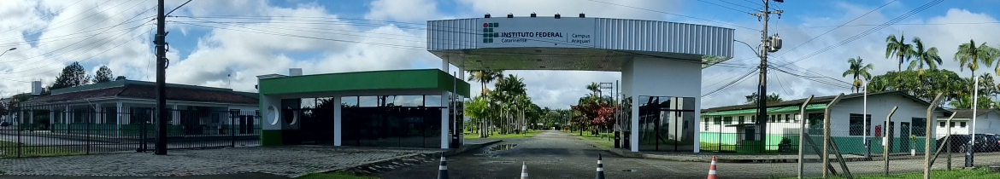

Notícia
Semana de Tecnologia movimenta o campus
Palestras, workshops e hackathon reuniram mais de 200 estudantes.
Ler mais...Portal Escolar • IFC Araquari
Notícias, eventos, projetos e informações da comunidade escolar, organizados para estudantes, famílias e visitantes.

Selecionados pela equipe editorial do portal.
Notícia
Palestras, workshops e hackathon reuniram mais de 200 estudantes.
Ler mais...Evento
Apresentações dos trabalhos desenvolvidos no semestre.
Ver agendaProjeto
Oficina aberta para estudantes do 1º ano, com vagas limitadas.
ConhecerEnvie sua proposta para a equipe do portal.